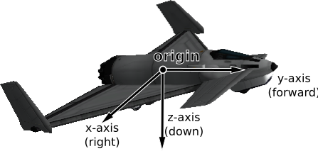
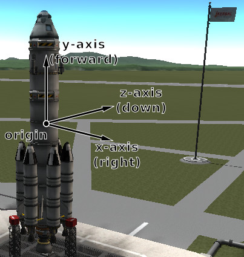
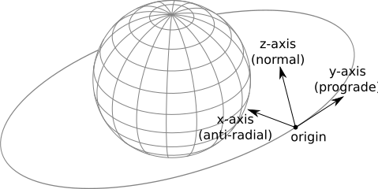
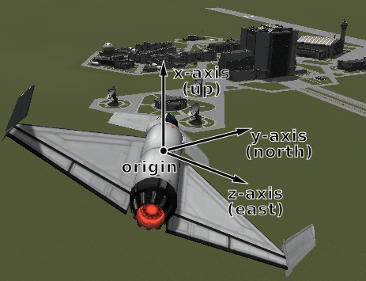
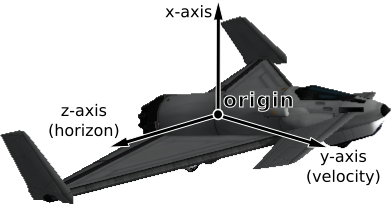

Vessel#
-
class Vessel#
These objects are used to interact with vessels in KSP. This includes getting orbital and flight data, manipulating control inputs and managing resources. Created using
active_vessel()orvessels().-
std::string name()#
-
void set_name(std::string value)#
The name of the vessel.
-
VesselType type()#
-
void set_type(VesselType value)#
The type of the vessel.
-
VesselSituation situation()#
The situation the vessel is in.
-
bool loaded()#
Whether the vessel is loaded, i.e. its parts are instantiated in the scene because it is within loading range of the active vessel. A vessel that is not loaded exists only as orbital data and is always on-rails (see
Vessel::packed()).
-
bool packed()#
Whether the vessel is packed (on-rails). A packed vessel has its physics simulation suspended and follows its orbit analytically. A vessel that is not loaded (see
Vessel::loaded()) is always packed.
-
bool recoverable()#
Whether the vessel is recoverable.
-
void recover()#
Recover the vessel.
-
double met()#
The mission elapsed time in seconds.
-
std::string biome()#
The name of the biome the vessel is currently in.
-
Flight flight(ReferenceFrame reference_frame = ReferenceFrame())#
Returns a
Vessel::flight()object that can be used to get flight telemetry for the vessel, in the specified reference frame.- Parameters:
reference_frame – Reference frame. Defaults to the vessel’s surface reference frame (
Vessel::surface_reference_frame()).
- Game Scenes:
Flight
Note
When this is called with no arguments, the vessel’s surface reference frame is used. This reference frame moves with the vessel, therefore velocities and speeds returned by the flight object will be zero. See the reference frames tutorial for examples of getting the orbital and surface speeds of a vessel.
-
Control control()#
Returns a
Vessel::control()object that can be used to manipulate the vessel’s control inputs. For example, its pitch/yaw/roll controls, RCS and thrust.- Game Scenes:
Flight
-
Comms comms()#
Returns a
Vessel::comms()object that can be used to interact with CommNet for this vessel.- Game Scenes:
Flight
-
AutoPilot auto_pilot()#
An
Vessel::auto_pilot()object, that can be used to perform simple auto-piloting of the vessel.- Game Scenes:
Flight
-
int32_t crew_capacity()#
The number of crew that can occupy the vessel.
-
int32_t crew_count()#
The number of crew that are occupying the vessel.
-
std::vector<CrewMember> crew()#
The crew in the vessel.
-
Resources resources()#
A
Vessel::resources()object, that can used to get information about resources stored in the vessel.- Game Scenes:
Flight
-
Resources resources_in_decouple_stage(int32_t stage, bool cumulative = true)#
Warning
Deprecated. Use
Stage::resources()from the object returned byVessel::decouple_stage_at()instead.Returns a
Vessel::resources()object, that can used to get information about resources stored in a given stage.- Parameters:
stage – Get resources for parts that are decoupled in this stage.
cumulative – When
false, returns the resources for parts decoupled in just the given stage. Whentruereturns the resources decoupled in the given stage and all subsequent stages combined.
- Game Scenes:
Flight
Note
Deprecated. Use
Vessel::decouple_stage_at()andStage::resources()instead. For details on stage numbering, see the discussion on Staging.
-
std::vector<Stage> stages()#
Activation (burn) stages for this vessel, in ascending stage order. This does not include the -1 stage (parts with no staging icon), as it carries no delta-v; use
Vessel::stage_at()with -1 to get those parts.- Game Scenes:
Flight
Note
Lists activation stages only (
decoupleisfalse). See also Staging.
-
Stage stage_at(int32_t stage)#
The activation stage with the given number. Pass -1 to get the parts that are never activated (those with no staging icon).
- Parameters:
stage – Get activation stage at this index.
- Game Scenes:
Flight
-
std::vector<Stage> decouple_stages()#
Decouple stages for this vessel, in ascending stage order. The -1 stage, containing the parts that are never decoupled and remain on the vessel, is included first when any such parts exist.
- Game Scenes:
Flight
Note
Lists decouple stages only. Delta-v is not defined on these stages.
-
Stage decouple_stage_at(int32_t stage)#
The decouple stage with the given number. Pass -1 to get the parts that are never decoupled and remain on the vessel after all stages have fired.
- Parameters:
stage – Get decouple stage at this index.
- Game Scenes:
Flight
-
float delta_v()#
Total delta-v for the vessel in the current situation, in m/s.
- Game Scenes:
Flight
Note
Requires the stock delta-v display to be ready. Units are meters per second.
-
float vacuum_delta_v()#
Total vacuum delta-v for the vessel, in m/s.
- Game Scenes:
Flight
-
float sea_level_delta_v()#
Total sea-level delta-v for the vessel, in m/s.
- Game Scenes:
Flight
-
float burn_time()#
Total burn time for the vessel, in seconds.
- Game Scenes:
Flight
-
Parts parts()#
A
Partsobject, that can used to interact with the parts that make up this vessel.- Game Scenes:
Flight
-
float mass()#
The total mass of the vessel, including resources, in kg.
- Game Scenes:
Flight
-
float dry_mass()#
The total mass of the vessel, excluding resources, in kg.
- Game Scenes:
Flight
-
float thrust()#
The total thrust currently being produced by the vessel’s engines, in Newtons. This is computed by summing
Engine::thrust()for every engine in the vessel.- Game Scenes:
Flight
-
float available_thrust()#
Gets the total available thrust that can be produced by the vessel’s active engines, in Newtons. This is computed by summing
Engine::available_thrust()for every active engine in the vessel.- Game Scenes:
Flight
-
float available_thrust_at(double pressure)#
Gets the total available thrust that can be produced by the vessel’s active engines, in Newtons. This is computed by summing
Engine::available_thrust_at()for every active engine in the vessel. Takes the given pressure into account.- Parameters:
pressure – Atmospheric pressure in atmospheres
- Game Scenes:
Flight
-
float max_thrust()#
The total maximum thrust that can be produced by the vessel’s active engines, in Newtons. This is computed by summing
Engine::max_thrust()for every active engine.- Game Scenes:
Flight
-
float max_thrust_at(double pressure)#
The total maximum thrust that can be produced by the vessel’s active engines, in Newtons. This is computed by summing
Engine::max_thrust_at()for every active engine. Takes the given pressure into account.- Parameters:
pressure – Atmospheric pressure in atmospheres
- Game Scenes:
Flight
-
float max_vacuum_thrust()#
The total maximum thrust that can be produced by the vessel’s active engines when the vessel is in a vacuum, in Newtons. This is computed by summing
Engine::max_vacuum_thrust()for every active engine.- Game Scenes:
Flight
-
float acceleration()#
The acceleration currently produced by the vessel’s engines, in \(m/s^2\). This is
Vessel::thrust()divided by the vessel’sVessel::mass().- Game Scenes:
Flight
-
float available_acceleration()#
The total available acceleration that can be produced by the vessel’s active engines, in \(m/s^2\). This is
Vessel::available_thrust()divided by the vessel’sVessel::mass().- Game Scenes:
Flight
-
float available_acceleration_at(double pressure)#
The total available acceleration that can be produced by the vessel’s active engines, in \(m/s^2\). This is
Vessel::available_thrust_at()divided by the vessel’sVessel::mass(). Takes the given pressure into account.- Parameters:
pressure – Atmospheric pressure in atmospheres
- Game Scenes:
Flight
-
float max_acceleration()#
The total maximum acceleration that can be produced by the vessel’s active engines, in \(m/s^2\). This is
Vessel::max_thrust()divided by the vessel’sVessel::mass().- Game Scenes:
Flight
-
float max_acceleration_at(double pressure)#
The total maximum acceleration that can be produced by the vessel’s active engines, in \(m/s^2\). This is
Vessel::max_thrust_at()divided by the vessel’sVessel::mass(). Takes the given pressure into account.- Parameters:
pressure – Atmospheric pressure in atmospheres
- Game Scenes:
Flight
-
float max_vacuum_acceleration()#
The total maximum acceleration that can be produced by the vessel’s active engines when the vessel is in a vacuum, in \(m/s^2\). This is
Vessel::max_vacuum_thrust()divided by the vessel’sVessel::mass().- Game Scenes:
Flight
-
float specific_impulse()#
The combined specific impulse of all active engines, in seconds. This is computed using the formula described here.
- Game Scenes:
Flight
-
float specific_impulse_at(double pressure)#
The combined specific impulse of all active engines, in seconds. This is computed using the formula described here. Takes the given pressure into account.
- Parameters:
pressure – Atmospheric pressure in atmospheres
- Game Scenes:
Flight
-
float vacuum_specific_impulse()#
The combined vacuum specific impulse of all active engines, in seconds. This is computed using the formula described here.
- Game Scenes:
Flight
-
float kerbin_sea_level_specific_impulse()#
The combined specific impulse of all active engines at sea level on Kerbin, in seconds. This is computed using the formula described here.
- Game Scenes:
Flight
-
std::tuple<double, double, double> moment_of_inertia()#
The moment of inertia of the vessel around its center of mass in \(kg.m^2\). The inertia values in the returned 3-tuple are around the pitch, roll and yaw directions respectively. This corresponds to the vessels reference frame (
Vessel::reference_frame()).- Game Scenes:
Flight
-
std::vector<double> inertia_tensor()#
The inertia tensor of the vessel around its center of mass, in the vessels reference frame (
Vessel::reference_frame()). Returns the 3x3 matrix as a list of elements, in row-major order.
-
std::tuple<std::tuple<double, double, double>, std::tuple<double, double, double>> available_torque()#
The maximum torque that the vessel generates. Includes contributions from reaction wheels, RCS, gimballed engines and aerodynamic control surfaces. Returns the torques in \(N.m\) around each of the coordinate axes of the vessels reference frame (
Vessel::reference_frame()). These axes are equivalent to the pitch, roll and yaw axes of the vessel.- Game Scenes:
Flight
-
std::tuple<std::tuple<double, double, double>, std::tuple<double, double, double>> available_reaction_wheel_torque()#
The maximum torque that the currently active and powered reaction wheels can generate. Returns the torques in \(N.m\) around each of the coordinate axes of the vessels reference frame (
Vessel::reference_frame()). These axes are equivalent to the pitch, roll and yaw axes of the vessel.- Game Scenes:
Flight
-
std::tuple<std::tuple<double, double, double>, std::tuple<double, double, double>> available_rcs_torque()#
The maximum torque that the currently active RCS thrusters can generate. Returns the torques in \(N.m\) around each of the coordinate axes of the vessels reference frame (
Vessel::reference_frame()). These axes are equivalent to the pitch, roll and yaw axes of the vessel.- Game Scenes:
Flight
-
std::tuple<std::tuple<double, double, double>, std::tuple<double, double, double>> available_rcs_force()#
The maximum force that the currently active RCS thrusters can generate. Returns the forces in \(N\) along each of the coordinate axes of the vessels reference frame (
Vessel::reference_frame()). These axes are equivalent to the right, forward and bottom directions of the vessel.- Game Scenes:
Flight
-
std::tuple<std::tuple<double, double, double>, std::tuple<double, double, double>> available_rcs_acceleration()#
The maximum acceleration that the currently active RCS thrusters can generate. This is
Vessel::available_rcs_force()divided by the vessel’sVessel::mass(). Returns the accelerations in \(m/s^2\) along each of the coordinate axes of the vessels reference frame (Vessel::reference_frame()). These axes are equivalent to the right, forward and bottom directions of the vessel.- Game Scenes:
Flight
-
std::tuple<std::tuple<double, double, double>, std::tuple<double, double, double>> available_engine_torque()#
The maximum torque that the currently active and gimballed engines can generate. Returns the torques in \(N.m\) around each of the coordinate axes of the vessels reference frame (
Vessel::reference_frame()). These axes are equivalent to the pitch, roll and yaw axes of the vessel.- Game Scenes:
Flight
-
std::tuple<std::tuple<double, double, double>, std::tuple<double, double, double>> available_control_surface_torque()#
The maximum torque that the aerodynamic control surfaces can generate. Returns the torques in \(N.m\) around each of the coordinate axes of the vessels reference frame (
Vessel::reference_frame()). These axes are equivalent to the pitch, roll and yaw axes of the vessel.- Game Scenes:
Flight
-
std::tuple<std::tuple<double, double, double>, std::tuple<double, double, double>> available_other_torque()#
The maximum torque that parts (excluding reaction wheels, gimballed engines, RCS and control surfaces) can generate. Returns the torques in \(N.m\) around each of the coordinate axes of the vessels reference frame (
Vessel::reference_frame()). These axes are equivalent to the pitch, roll and yaw axes of the vessel.- Game Scenes:
Flight
-
std::tuple<std::tuple<double, double, double>, std::tuple<double, double, double>> available_angular_acceleration()#
The maximum angular acceleration that the vessel can generate. Includes contributions from reaction wheels, RCS, gimballed engines and aerodynamic control surfaces. This is
Vessel::available_torque()divided by the vessel’sVessel::moment_of_inertia(). Returns the angular accelerations in \(rad/s^2\) around each of the coordinate axes of the vessels reference frame (Vessel::reference_frame()). These axes are equivalent to the pitch, roll and yaw axes of the vessel.- Game Scenes:
Flight
-
std::tuple<std::tuple<double, double, double>, std::tuple<double, double, double>> available_reaction_wheel_angular_acceleration()#
The maximum angular acceleration that the currently active and powered reaction wheels can generate. This is
Vessel::available_reaction_wheel_torque()divided by the vessel’sVessel::moment_of_inertia(). Returns the angular accelerations in \(rad/s^2\) around each of the coordinate axes of the vessels reference frame (Vessel::reference_frame()). These axes are equivalent to the pitch, roll and yaw axes of the vessel.- Game Scenes:
Flight
-
std::tuple<std::tuple<double, double, double>, std::tuple<double, double, double>> available_rcs_angular_acceleration()#
The maximum angular acceleration that the currently active RCS thrusters can generate. This is
Vessel::available_rcs_torque()divided by the vessel’sVessel::moment_of_inertia(). Returns the angular accelerations in \(rad/s^2\) around each of the coordinate axes of the vessels reference frame (Vessel::reference_frame()). These axes are equivalent to the pitch, roll and yaw axes of the vessel.- Game Scenes:
Flight
-
std::tuple<std::tuple<double, double, double>, std::tuple<double, double, double>> available_engine_angular_acceleration()#
The maximum angular acceleration that the currently active and gimballed engines can generate. This is
Vessel::available_engine_torque()divided by the vessel’sVessel::moment_of_inertia(). Returns the angular accelerations in \(rad/s^2\) around each of the coordinate axes of the vessels reference frame (Vessel::reference_frame()). These axes are equivalent to the pitch, roll and yaw axes of the vessel.- Game Scenes:
Flight
-
std::tuple<std::tuple<double, double, double>, std::tuple<double, double, double>> available_control_surface_angular_acceleration()#
The maximum angular acceleration that the aerodynamic control surfaces can generate. This is
Vessel::available_control_surface_torque()divided by the vessel’sVessel::moment_of_inertia(). Returns the angular accelerations in \(rad/s^2\) around each of the coordinate axes of the vessels reference frame (Vessel::reference_frame()). These axes are equivalent to the pitch, roll and yaw axes of the vessel.- Game Scenes:
Flight
-
std::tuple<std::tuple<double, double, double>, std::tuple<double, double, double>> available_other_angular_acceleration()#
The maximum angular acceleration that parts (excluding reaction wheels, gimballed engines, RCS and control surfaces) can generate. This is
Vessel::available_other_torque()divided by the vessel’sVessel::moment_of_inertia(). Returns the angular accelerations in \(rad/s^2\) around each of the coordinate axes of the vessels reference frame (Vessel::reference_frame()). These axes are equivalent to the pitch, roll and yaw axes of the vessel.- Game Scenes:
Flight
-
ReferenceFrame reference_frame()#
The reference frame that is fixed relative to the vessel, and orientated with the vessel.
The origin is at the center of mass of the vessel.
The axes rotate with the vessel.
The x-axis points out to the right of the vessel.
The y-axis points in the forward direction of the vessel.
The z-axis points out of the bottom off the vessel.
- Game Scenes:
Flight

Vessel reference frame origin and axes for the Aeris 3A aircraft#

Vessel reference frame origin and axes for the Kerbal-X rocket#
-
ReferenceFrame orbital_reference_frame()#
The reference frame that is fixed relative to the vessel, and orientated with the vessels orbital prograde/normal/radial directions.
The origin is at the center of mass of the vessel.
The axes rotate with the orbital prograde/normal/radial directions.
The x-axis points in the orbital anti-radial direction.
The y-axis points in the orbital prograde direction.
The z-axis points in the orbital normal direction.
- Game Scenes:
Flight
Note
Be careful not to confuse this with ‘orbit’ mode on the navball.

Vessel orbital reference frame origin and axes#
-
ReferenceFrame surface_reference_frame()#
The reference frame that is fixed relative to the vessel, and orientated with the surface of the body being orbited.
The origin is at the center of mass of the vessel.
The axes rotate with the north and up directions on the surface of the body.
The x-axis points in the zenith direction (upwards, normal to the body being orbited, from the center of the body towards the center of mass of the vessel).
The y-axis points northwards towards the astronomical horizon (north, and tangential to the surface of the body – the direction in which a compass would point when on the surface).
The z-axis points eastwards towards the astronomical horizon (east, and tangential to the surface of the body – east on a compass when on the surface).
- Game Scenes:
Flight
Note
Be careful not to confuse this with ‘surface’ mode on the navball.

Vessel surface reference frame origin and axes#
-
ReferenceFrame surface_velocity_reference_frame()#
The reference frame that is fixed relative to the vessel, and orientated with the velocity vector of the vessel relative to the surface of the body being orbited.
The origin is at the center of mass of the vessel.
The axes rotate with the vessel’s velocity vector.
The y-axis points in the direction of the vessel’s velocity vector, relative to the surface of the body being orbited.
The z-axis is in the plane of the astronomical horizon.
The x-axis is orthogonal to the other two axes.
- Game Scenes:
Flight

Vessel surface velocity reference frame origin and axes#
-
std::tuple<double, double, double> position(ReferenceFrame reference_frame)#
The position of the center of mass of the vessel, in the given reference frame.
- Parameters:
reference_frame – The reference frame that the returned position vector is in.
- Returns:
The position as a vector.
- Game Scenes:
Flight
-
std::tuple<std::tuple<double, double, double>, std::tuple<double, double, double>> bounding_box(ReferenceFrame reference_frame)#
The axis-aligned bounding box of the vessel in the given reference frame.
- Parameters:
reference_frame – The reference frame that the returned position vectors are in.
- Returns:
The positions of the minimum and maximum vertices of the box, as position vectors.
- Game Scenes:
Flight
-
std::tuple<double, double, double> velocity(ReferenceFrame reference_frame)#
The velocity of the center of mass of the vessel, in the given reference frame.
- Parameters:
reference_frame – The reference frame that the returned velocity vector is in.
- Returns:
The velocity as a vector. The vector points in the direction of travel, and its magnitude is the speed of the body in meters per second.
- Game Scenes:
Flight
-
std::tuple<double, double, double, double> rotation(ReferenceFrame reference_frame)#
The rotation of the vessel, in the given reference frame.
- Parameters:
reference_frame – The reference frame that the returned rotation is in.
- Returns:
The rotation as a quaternion of the form \((x, y, z, w)\).
- Game Scenes:
Flight
-
std::tuple<double, double, double> direction(ReferenceFrame reference_frame)#
The direction in which the vessel is pointing, in the given reference frame.
- Parameters:
reference_frame – The reference frame that the returned direction is in.
- Returns:
The direction as a unit vector.
- Game Scenes:
Flight
-
std::tuple<double, double, double> angular_velocity(ReferenceFrame reference_frame)#
The angular velocity of the vessel, in the given reference frame.
- Parameters:
reference_frame – The reference frame the returned angular velocity is in.
- Returns:
The angular velocity as a vector. The magnitude of the vector is the rotational speed of the vessel, in radians per second. The direction of the vector indicates the axis of rotation, using the right-hand rule.
- Game Scenes:
Flight
-
std::string name()#
-
enum struct VesselType#
The type of a vessel. See
Vessel::type().-
enumerator base#
Base.
-
enumerator debris#
Debris.
-
enumerator lander#
Lander.
-
enumerator plane#
Plane.
-
enumerator probe#
Probe.
-
enumerator relay#
Relay.
-
enumerator rover#
Rover.
-
enumerator ship#
Ship.
-
enumerator station#
Station.
-
enumerator space_object#
SpaceObject.
-
enumerator unknown#
Unknown.
-
enumerator eva#
EVA.
-
enumerator flag#
Flag.
-
enumerator deployed_science_controller#
DeployedScienceController.
-
enumerator deployed_science_part#
DeploedSciencePart.
-
enumerator dropped_part#
DroppedPart.
-
enumerator deployed_ground_part#
DeployedGroundPart.
-
enumerator base#
-
enum struct VesselSituation#
The situation a vessel is in. See
Vessel::situation().-
enumerator docked#
Vessel is docked to another.
-
enumerator escaping#
Escaping.
-
enumerator flying#
Vessel is flying through an atmosphere.
-
enumerator landed#
Vessel is landed on the surface of a body.
-
enumerator orbiting#
Vessel is orbiting a body.
-
enumerator pre_launch#
Vessel is awaiting launch.
-
enumerator splashed#
Vessel has splashed down in an ocean.
-
enumerator sub_orbital#
Vessel is on a sub-orbital trajectory.
-
enumerator docked#
-
class CrewMember#
Represents crew in a vessel. Can be obtained using
Vessel::crew().-
std::string name()#
-
void set_name(std::string value)#
The crew members name.
-
CrewMemberType type()#
The type of crew member.
-
bool on_mission()#
Whether the crew member is on a mission.
-
float courage()#
-
void set_courage(float value)#
The crew members courage.
-
float stupidity()#
-
void set_stupidity(float value)#
The crew members stupidity.
-
float experience()#
-
void set_experience(float value)#
The crew members experience.
-
bool badass()#
-
void set_badass(bool value)#
Whether the crew member is a badass.
-
bool veteran()#
-
void set_veteran(bool value)#
Whether the crew member is a veteran.
-
std::string trait()#
The crew member’s job.
-
CrewMemberGender gender()#
The crew member’s gender.
-
RosterStatus roster_status()#
The crew member’s current roster status.
-
std::vector<int32_t> career_log_flights()#
The flight IDs for each entry in the career flight log.
-
std::vector<std::string> career_log_types()#
The type for each entry in the career flight log.
-
std::vector<std::string> career_log_targets()#
The body name for each entry in the career flight log.
-
std::string name()#
-
enum struct CrewMemberType#
The type of a crew member. See
CrewMember::type().-
enumerator applicant#
An applicant for crew.
-
enumerator crew#
Rocket crew.
-
enumerator tourist#
A tourist.
-
enumerator unowned#
An unowned crew member.
-
enumerator applicant#
-
enum struct CrewMemberGender#
A crew member’s gender. See
CrewMember::gender().-
enumerator male#
Male.
-
enumerator female#
Female.
-
enumerator male#